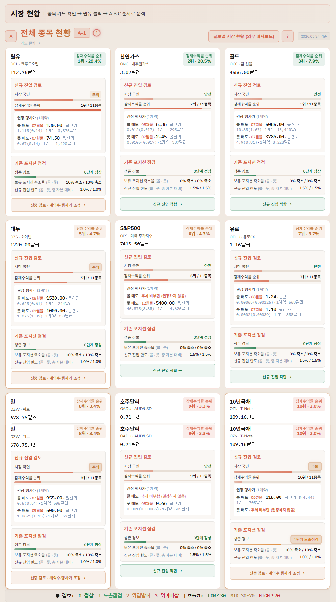
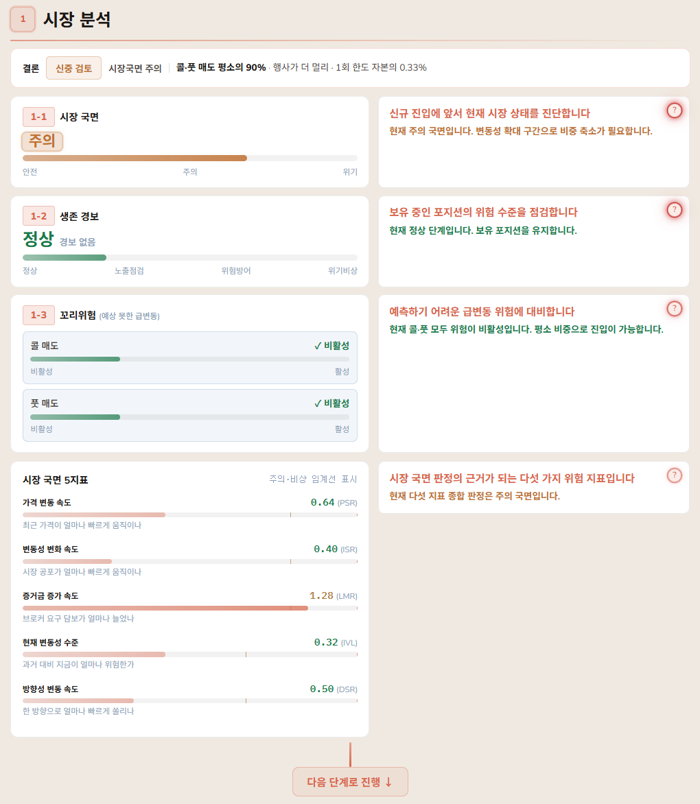
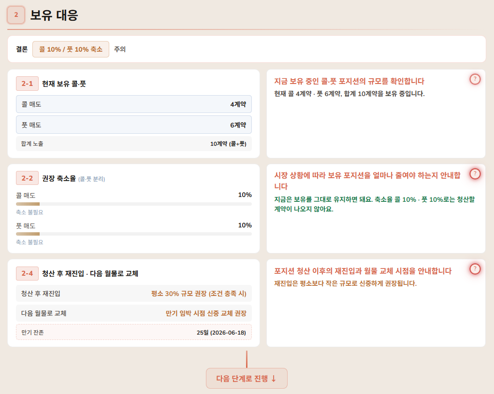
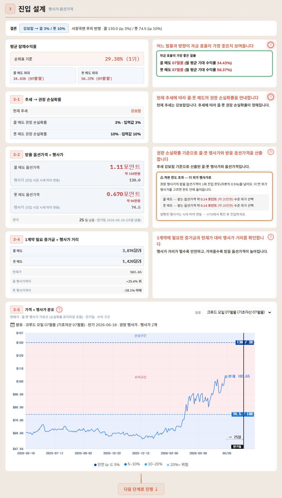
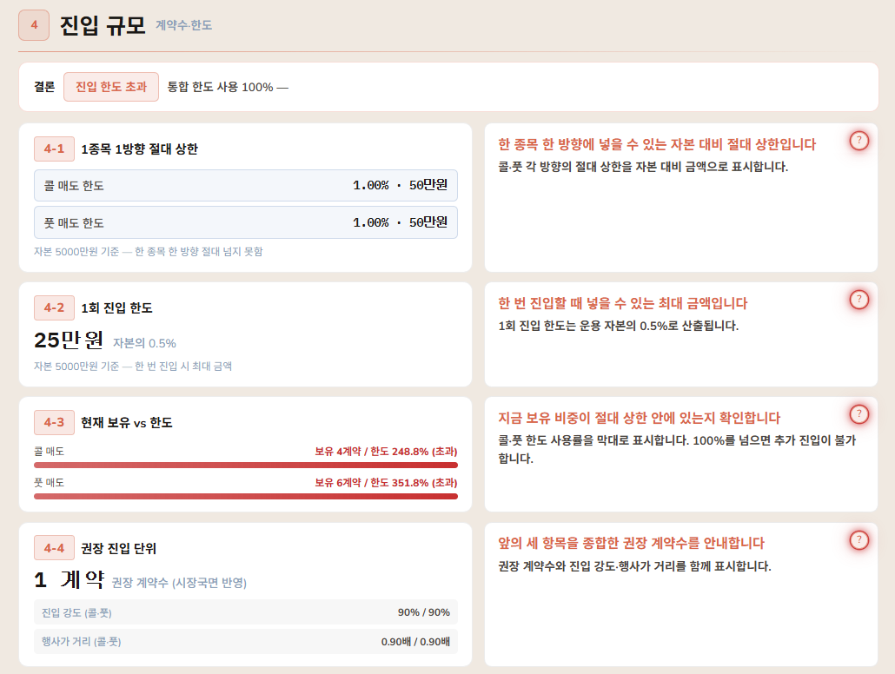
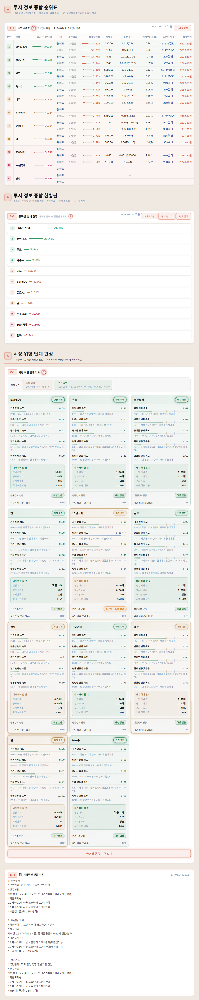

보험회사가 망했다는 뉴스,
본 적 있으신가요?
아마 거의 없으실 거예요.
거기엔 분명한 이유가 있습니다.
옵션 매도 — 금융 시장에서 보험회사를 운영하는 것과 같습니다.
답은 단순해요.
보험을 철저히 '회사에게 유리하게' 설계하기 때문입니다.
유리한 고객만 골라서 판매합니다
젊고 건강한 사람에게, 만기가 짧은 보험만을 팔아요.
그 짧은 사이 보험금이 지급될 가능성은 희박하죠.
처음부터 수익을 확보하고 시작하는 겁니다.
매달 보험료로 수익을 내고, 가끔 보험금을 지급합니다
보험료는 매달 꾸준히 들어오고, 큰 사고는 아주 가끔 일어납니다.
이러한 구조가 반복되면 — 자금이 쌓이고 투자회사의 안정성은 높아집니다.
그 보험료를 꾸준히 받는 쪽 — 그게 옵션 매도자, 바로 우리입니다.
단, 위험관리만 잘해 준다면요
개인이 직접 보험 사업을 운영하려면, 두 가지 진입장벽 앞에 놓이게 됩니다.
'유리한 보험'만을 골라내기 어렵다
시장에는 수많은 옵션이 있습니다.
그중 회사에게 유리한 보험만을 골라내야 하고, 게다가 그 보험 하나하나를 직접 설계해야 합니다.
'고객의 건강 상태'를 알 수 없다
보험을 팔기 전에 고객이 건강한지, 판매한 뒤 고객의 건강이 나빠지고 있는지 — 개인은 그걸 미리 진단하고 파악할 방법이 없습니다.
파악할 수 없으니, 대비할 수도 없죠.
저희가 제공하는 서비스는 철저한 데이터 기반으로 이루어져 있습니다.
이 대시보드는 '이 종목 사세요', '지금 위험합니다, 파세요'라고 답을 정해주는 도구가 아닙니다.
과거 데이터와 현재 옵션 가격을 비교 분석하여 확률적으로 우위를 갖춰나갈 수 있는 네 가지 도구를 — 한 화면에 담아 제공해 드립니다.
고객 건강검진
건강 모니터링
선별, 순위
운영보고서
먼저 궁금한 도구가 있다면, 위 카드를 눌러 바로 이동할 수 있어요.
보험 사업에서 가장 무서운 건 '보험금 지급'입니다.
그래서 우리는 두 단계로 위험을 미리 파악하고 대비합니다.
시장의 위험을 4개 지표로 측정해, 매일 '안전 · 주의 · 위험' 세 국면으로 알려드립니다.
엑스레이로 몸속을 미리 보듯, 진입하기 전에 위험부터 확인하는 거죠.
얼마나 빨라졌나
얼마나 빠르게 퍼지나
커지고 있나
어디까지 커졌나
보유 포지션을 실시간으로 감시하다가, 위험이 커지면 단계별 경보로 알려드립니다.
보험금을 지급할 일을 — 터지기 전에 미리 막는 장치예요.
더 보수적으로
· 헤지 대응
생존 최우선
사업의 수익성을 개선해 드립니다
위험관리는 충분히 보완됐습니다.
그다음 어떤 옵션을 골라 보험을 판매해야 할지, 그리고 판매해 보험 사업을 운용하고 있다면 지금 잘 운용되고 있는지 점검하는 일까지 — 함께 도와드립니다.
증거금(거래에 맡겨두는 담보금) 대비 수익성이 높고 위험은 적은 옵션만 골라, 종목별 순위로 보여드립니다.
전국에서 가장 건강한 청년만 추려주는 대행 서비스처럼요.
여러 행사가
위험 요소는 걸러냄
1 · 2 · 3 …
쌓인 거래 기록을 클릭 한 번으로 정리해, 어디를 고쳐야 할지 한눈에 보여드립니다.
데이터가 된다
자동으로 정리
보완점 한눈에
수십~수백 배 손실 위기 속에서 그 실효성을 검증한 결과로 만들어졌습니다
레이님이 약 15억 원을 직접 운용하며, 5년 반 넘게 이 기준을 다듬고 검증해 왔습니다.
그 사이 시장은 여러 번 큰 사고가 발생했습니다.
해당 월에 일부 수익 전환
수십~수백 배 급등
같은 위기 대응 기준을 재정비
생존경보로 손실 제한
2020.11 ~ 2026.04
위·아래 두 직선은 수익이 오르내린 범위(채널)를 보여줍니다.
그게 5년 반 동안 우상향 그래프를 만든 비결입니다.
트레이딩키 종합 대시보드입니다
레이님이 직접 운용하며 다듬어온 기준을, 누구나 쉽고 빠르게 활용할 수 있도록 한 화면에 담았습니다.
이 대시보드는 매매의 전 과정을 다섯 단계의 흐름으로 안내 드립니다.
진입
무엇을, 어떻게 들어갈지 정합니다
운용
보유 포지션을 어떻게 관리할지 기준을 제공합니다
대응
시장의 위험 신호가 발생할 때 어떻게 대응할지 기준을 제공합니다
관리
전체 운용 자금의 노출과 자금 상태를 점검합니다
청산
손실 가능성이 높아지는 시점에 맞춰 미리 대응할 수 있도록 기준을 제공합니다
지금까지는 이 대시보드가 '어떤 도구인지' 살펴봤습니다.
다음 장부터는 각 화면을 직접 따라가며, 대시보드를 어떻게 사용하는지 하나씩 안내해 드리겠습니다.
대시보드는 화면 좌측 상단의 6개 탭으로 이뤄져 있습니다.
위 탭 막대는 스크롤을 내려도 계속 따라다니고, 지금 어느 탭을 보고 있는지 버튼 색으로 알려줍니다.
탭을 누르면 해당 위치로 바로 이동합니다.
각각의 탭은 아래와 같이 구성되어 있습니다.
자금 정보와 HTS(증권사 거래 프로그램) 화면 데이터를 입력하는 곳입니다.
해당 탭만 채우면 나머지 다섯가지 탭이 전부 자동으로 연동되어 계산됩니다.

본인 계좌의 자금 정보(예탁금·환율·증거금)를 입력하는 영역입니다.
해당 영역에 입력한 값이 대시보드 전체 계산의 기준이 됩니다.
각 항목의 자세한 설명은 ① 버튼을 누르면 확인할 수 있습니다.


+ 데이터 붙여넣기 버튼을 누른 뒤, HTS(증권사 거래 프로그램)에서 복사한 1316창 데이터를 붙여넣고 읽기 & 적용을 누릅니다.
보유 중인 포지션이 위험·자금 관리·매매 현황 탭에 자동으로 반영됩니다.
HTS에서 데이터를 받아 업로드하는 방법은 ② 버튼을 누르면 구체적인 방법을 확인할 수 있습니다.


+ 데이터 붙여넣기 버튼을 누른 뒤, HTS에서 복사한 1310창 데이터를 붙여넣고 읽기 & 적용을 누릅니다.
그동안의 거래 내역이 매매 복기·매매 현황 탭에 자동으로 반영됩니다.
HTS에서 데이터를 받아 업로드하는 방법은 ③ 버튼을 누르면 구체적인 방법을 확인할 수 있습니다.
모든 종목들의 현황을 한 화면에 모아 보여주는 영역입니다.
어느 종목이 권장되고 어느 종목이 위험도가 높은지, 카드만 훑어도 바로 파악됩니다.

상세 현황을 파악하고 싶은 종목의 카드를 클릭하면, 그 종목의 상세 분석 페이지로 이동합니다.
각 카드만 봐도 그 종목의 시장 상태와 진입 가능 여부가 바로 파악됩니다.
먼저 전체 카드를 훑어 위험한 종목을 거른 뒤, 관심 종목을 눌러 자세히 확인하는 것을 추천합니다.
시장 현황 탭에서 종목 카드를 클릭하면 해당 종목의 상세 정보가 각 단계별로 상세히 출력됩니다.
① 시장 분석 → ② 보유 대응 → ③ 진입 설계 → ④ 진입 규모 — 네 단계를 차례대로 따라가며 진입 여부 및 청산 기준을 검토합니다.

가장 상단에 있는 로드맵은 각각의 영역의 핵심 결론을 한눈에 파악할 수 있습니다.
각 단계 카드 하단 영역을 보면 해당 단계의 결론을 한눈에 파악할 수 있습니다. (예: 신중 검토 · 콜 10% 축소).
오른쪽 위 단계 버튼을 누르면 원하는 단계로 바로 이동할 수 있습니다.
위험단계가 높아질수록 테두리 색과 펄스로 그 정도를 표기합니다.
설명란의 ? 버튼을 누르면 더 자세한 안내를 확인할 수 있습니다.

1 시장 분석 영역은 현재 위험 단계를 체계적으로 나타냅니다.
즉 위험관리 기준을 바탕으로 안정성 판단 기준을 정립하는 단계입니다.
맨 위 결론 배지를 먼저 확인하세요 — 해당 영역의 결과와 위험 단계를 직관적으로 표시합니다.
1-1 시장 국면은 진입 전 안전·주의·위기 중 현재 위치를,
1-2 생존 경보는 보유 포지션의 위험 단계를,
1-3 꼬리위험은 예상 못 한 급변동 가능성을 보여줍니다.
맨 아래 5개 지표는 국면 판정의 근거가 된 다섯 가지 위험 수치입니다.
국면이 안전이면 평소대로, 주의면 비중을 줄여 진입, 위기면 신규 진입을 자제하는 것을 권장합니다.

2 보유 대응 영역은 보유 중인 포지션이 현재 안전한지, 또는 포지션을 축소 정리해야 할지 점검하는 단계입니다.
맨 위 결론 배지를 먼저 확인하세요 — 지금 보유 포지션을 얼마나 줄여야 하는지 한눈에 보여줍니다.
2-1 현재 보유 콜·풋은 지금 들고 있는 콜·풋 계약 수를,
2-2 권장 축소율은 시장 상황에 맞춰 콜·풋을 각각 얼마나 줄여야 하는지를,
2-4 청산 후 재진입·월물 교체는 정리한 뒤 다시 들어갈 시점과 만기 잔존일을 보여줍니다.
권장 축소율만큼 콜·풋을 줄이고, 만기가 가까우면 다음 월물로 교체하는 것을 권장합니다.

3 진입 설계 영역은 어느 행사가에, 어떤 가격으로 진입할지를 설계하는 단계입니다.
맨 위 결론 배지를 먼저 확인하세요 — 권장 행사가와 받을 옵션가격을 한눈에 보여줍니다.
평균 잠재수익률은 해당 종목이 순위표에서 어느 정도 수익을 기대해 볼 수 있는지를,
3-1 추세 → 권장 손실확률은 현재 추세에 맞는 콜·풋 손실확률을,
3-2 받을 옵션가격 + 행사가는 그 기준으로 산출된 행사가와 받게 될 금액을,
3-4 1계약 필요 증거금 + 행사가 거리는 한 계약에 드는 증거금과 현재가 대비 거리를 보여줍니다.
맨 아래 3-5 가격 + 행사가 분포 차트로 행사가가 손실 구간에서 얼마나 떨어져 있는지 눈으로 확인할 수 있습니다.
설명란에 '자본 한도 초과'가 뜨면, 더 먼 외가 행사가를 골라 한도 안으로 들어오는 옵션을 선택하는 것을 권장합니다.

4 진입 규모 영역은 이 종목에 몇 계약까지 들어갈 수 있는지, 진입 가능 규모를 정하는 단계입니다.
맨 위 결론 배지를 먼저 확인하세요 — 지금 추가 진입이 가능한지, 한도를 넘었는지 보여줍니다.
4-1 절대 상한은 한 종목 한 방향에 넣을 수 있는 최대 금액을,
4-2 1회 진입 한도는 한 번에 넣을 수 있는 금액(자본의 0.5%)을,
4-3 현재 보유 vs 한도는 지금 보유분이 한도 안에 있는지를 사용률로,
4-4 권장 진입 단위는 앞의 항목을 종합한 권장 계약수를 보여줍니다.
사용률이 100%를 넘으면 신규 진입을 멈추고, 한도 안이라면 권장 계약수만큼만 진입하는 것을 권장합니다.
시장 현황 탭이 종목 하나하나를 깊이 있게 분석해 봤다면, 매매 전략 탭은 모든 종목을 한 화면에서 비교 분석해 볼 수 있는 곳입니다.
어느 종목·옵션이 유리한지, 어느 종목이 안전성이 높은지, 또는 위험도가 높은지 나열하여 한눈에 비교 분석하여 선택할 수 있습니다.

이 탭은 두 가지를 한 페이지에서 비교하게 해줍니다.
① 자금 효율이 높은 옵션을 종목별로 비교합니다.
증거금 대비 수익성이 좋은 옵션을 순위·현황표로 모아, 어느 종목부터 볼지 정할 수 있습니다.
② 모든 종목의 시장 위험 단계를 비교합니다.
시장국면·생존경보·꼬리위험을 종목마다 나란히 띄워, 안전한 종목과 위험한 종목을 한눈에 가려냅니다.
각 항목의 자세한 수치와 근거는 ① ② ③ 번호 버튼을 누르면 펼쳐집니다.
내 자금과 보유 포지션이 지금 안전한 상태인지 종합 점검하는 곳입니다.
A 증거금 여력 → B 포지션 위험 점검 → C 진입 시뮬레이션 → D 위험 포지션 확인 순으로 보면 됩니다.

내 위탁증거금을 지금 얼마나 쓰고 있는지 확인해, 신규 진입이 가능한 상태인지 판단하는 영역입니다.
맨 왼쪽 결론 배지를 먼저 보세요 — 진입 고려·신중·비권장이 한눈에 표시됩니다.
기준은 60% 이하 진입 고려 · 60~70% 신중 · 70% 초과 진입 비권장입니다.
증거금 설계 논리는 ① 버튼을 누르면 자세한 설명글이 펼쳐집니다.

보유 중인 모든 포지션의 노출·손익·위험을 한 표에서 점검하는 영역입니다.
표의 색이 곧 위험도를 나타냅니다 — 노출 1.5% 이상 위험, 1~1.5% 주의, 1% 미만 안전.
생존경보 칸의 콜·풋 1 2 3 버튼으로 포지션별 경보 단계를 직접 지정하고, 전체 자동 연동을 클릭하면 현재 발동된 생존경보를 자동으로 출력해 줍니다.
경보 단계가 발동되거나 1·2·3으로 지정하면, 보유 포지션 유지 시 다음날 경보단계별 추정손실이 자동으로 계산됩니다.
이를 통해 손실 규모를 미리 짐작해 봄으로써, 손절을 하는 데 객관적인 판단에 도움을 받게 됩니다.
자세한 사용 방법 및 논리 근거는 ② 버튼을 누르면 자세한 설명글이 펼쳐집니다.

실제 신규 포지션을 진입하기 전, 해당 포지션을 추가 진입하면 포트폴리오에 어떻게 반영될지 미리 계산해 보는 영역입니다.
아래 폼에 종목·구분·계약수·진입가를 넣고 + 추가를 누르세요.
그러면 B 영역 매매 비중 (노출%) '진입후' 열이 자동으로 갱신되어, 진입한 뒤의 노출%을 미리 파악하여 과도한 매매 비중을 사전에 방지할 수 있어 분산 포트폴리오 운영에 도움을 받게 됩니다.
(1회 진입 한도) 진입후 노출이 0.5%를 넘으면 경고가 표시됩니다.

보유 포지션 중 손실이 나거나 위험도가 높아진 종목만 골라 카드로 보여주는 영역입니다.
위쪽 필터로 조건을 정하고 조회를 누르면, 아래 카드 목록이 그 조건에 맞춰 출력됩니다.
필터는 네 가지 — 표시 모드(위험 경보만·손익 마이너스만·전체), 세부 종목, 월물, 구분(콜·풋).
예를 들어 '위험 경보만'으로 조회하면, 전체 29개 중 위험 단계 포지션만(예: 3개) 추려집니다.
각 카드는 그 포지션의 매도·현재 옵션가격, 노출, 행사가까지 거리를 보여줍니다.
지금 내 계좌가 어떤 상태인지 — 손익·수익률·보유 포지션을 한눈에 확인하는 곳입니다.
A 현황판으로 전체 성과를, B 포지션 테이블로 보유 내역을 봅니다.


내 계좌의 전체 성과를 요약해 보여주는 영역입니다.
A-1은 종목별 평가손익과 예탁 평가액·총 손익·수익률, 누적 손익 곡선을,
A-2는 증거금 사용률을,
A-3은 종목별 평가손익을 막대로,
A-4는 월별 수익률을 보여줍니다.
성과가 우상향하고 있는지, 어느 종목·어느 달이 잘됐고 부진했는지를 한눈에 점검할 수 있습니다.

지금 보유 중인 모든 포지션을 표 하나로 모아 보여주는 영역입니다.
위쪽 월물·종목 버튼을 누르면, 아래 표가 그 조건에 맞는 포지션만 보여줍니다.
각 행은 종목·월물·콜풋·계약수·행사가·평균가·현재가·평가손익·시장가치를 담고 있습니다.
기간 설정을 해 다운 받은 거래 내역을 통해, 보완할 부분이나 잘 하고 있는 부분을 파악하고 분석하여 개선하는 영역입니다.
성과 확인부터 복기 기록 작성까지, 한 페이지에서 모두 확인할 수 있습니다.

해당 탭에서는 '어떤 부분을 잘했는지, 무엇을 보완해야 하는지'를 객관적인 기준과 데이터로 확인할 수 있습니다.
지난 성과를 숫자로 확인합니다.
승률·손익비·수익률·누적 손익 곡선으로 그동안의 결과를 점검합니다.
손실의 원인과 매매 성향을 분석합니다.
어디서 손절이 났는지, 기준을 어겼는지, 진입 성향이 어떤지를 짚어 줍니다.
무엇을 고칠지 복기 기록으로 정리합니다.
핵심 문제와 개선점을 적어 두고,
매매일지를 다운로드 받아 볼 수 있습니다.
커뮤니티 공유용 텍스트로 바로 내보낼 수 있습니다.
각 항목의 자세한 수치와 진단은 ① ② ③ 번호 버튼을 누르면 펼쳐집니다.